Manual do Painel de Suporte
Como diagnosticar e destravar documentos, extratos e integrações de qualquer cliente pelo painel, sem abrir o banco, o n8n ou o código.
Nos prints, os e-mails aparecem como usuario@exemplo.com de propósito. Os demais dados são do projeto real usado para fotografar a tela.
Para que serve o painel
O painel de suporte mostra qualquer organização do Prestaí, com seus projetos, usuários e documentos, e diz em português o que está acontecendo com cada documento: se está andando, se está parado, se deu erro ou se depende do cliente. Quando cabe ao suporte agir, o botão da ação aparece ali mesmo.
Quem acessa
Só quem tem o perfil interno de suporte (is_suporte) ou de administrador da plataforma (is_platform_admin). Qualquer outra conta é mandada de volta para a seleção de módulos. Não existem níveis diferentes dentro do suporte: quem entra vê tudo e pode usar todas as ações.
Como abrir
- Entre no Prestaí com a sua conta SSYS.
- Abra o endereço
/suporte.htmldo Prestaí (por exemplo,https://<endereço do Prestaí>/suporte.html). - Se a sessão tiver expirado, o painel leva você para o login. Entre de novo e volte ao endereço.
Regras de ouro
Não existe no painel nenhum botão de enviar, de "Tentar novamente" ou de avançar a partir de Pronto para envio ou Erro no Envio. O envio usa a credencial gov.br do gestor, então é sempre o cliente que clica. Quando o documento está nessas etapas, o seu trabalho é avisar o cliente.
- A única ação que muda o andamento de negócio de um documento é Avançar documento. Use só a pedido do cliente e sempre com motivo.
- O suporte não corrige campos lidos pelo OCR e não troca rubrica. Isso é feito pelo cliente, no Prestaí.
- Tudo o que você faz fica registrado: quem fez, quando, o que mudou e o motivo, quando houver um. Aparece na linha do tempo do documento e no audit_log.
- O motivo pode ser o número da ocorrência do Notion. Ele é obrigatório nas ações que mudam alguma coisa de forma relevante (avançar, refazer conciliação, apagar, encerrar exportação, reimportar projeto SALIC, resetar acesso) e opcional nos reprocessamentos.
- O botão desabilitado sempre diz por quê. O motivo do bloqueio aparece embaixo do botão e também ao passar o mouse. Se a ação está bloqueada, não tente contornar: leia o motivo e siga o próximo passo indicado.
A tela inicial
Ao abrir o painel você vê, de cima para baixo: a busca global, a lista de organizações e, no fim da página, a saúde do sistema.
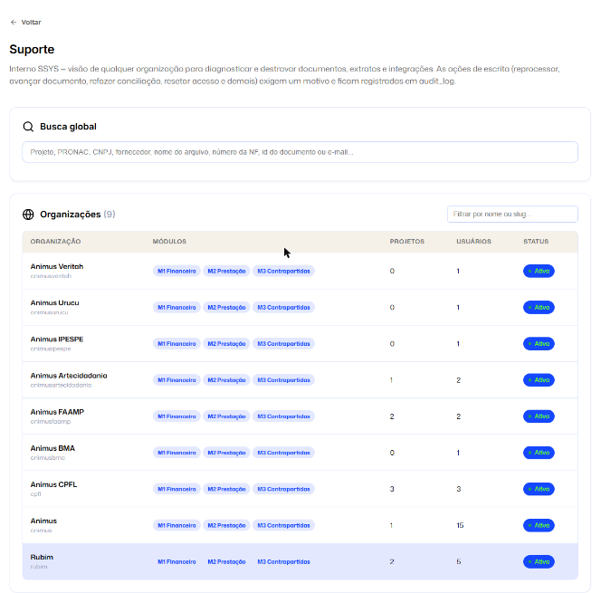
A lista de organizações tem um filtro por nome ou slug no canto superior direito. Clique numa organização para abrir os projetos e os usuários dela logo abaixo.
Encontrar o cliente
Pela busca global
A busca começa a responder a partir de 3 caracteres e aceita:
| O que digitar | O que encontra | Ao clicar no resultado |
|---|---|---|
| Nome do projeto ou PRONAC | Projetos | Abre a organização e o projeto, já na aba Atenção |
| CNPJ (só números, 11 dígitos ou mais) ou razão social | Fornecedores | Abre a organização dona do fornecedor |
| Nome do arquivo ou número da NF | Documentos | Abre a ficha do documento |
| Id do documento (o código longo, com hífens) | O documento exato | Abre a ficha do documento |
| E-mail (ou parte dele, 4 caracteres ou mais) | Usuários | Abre a organização do usuário |
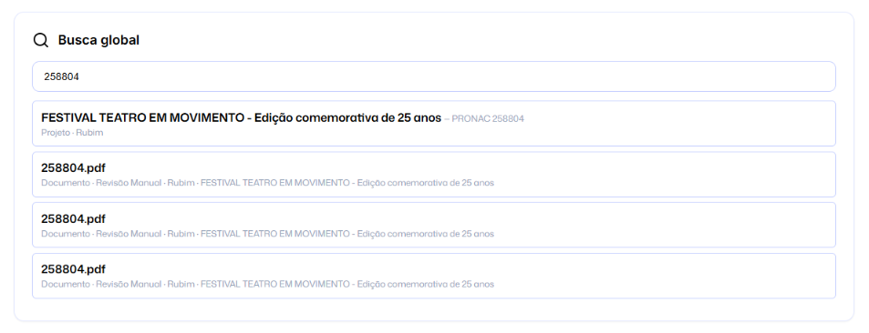
Quando o cliente manda o nome do arquivo que "não andou", busque pelo nome do arquivo: você cai direto na ficha.
Pela lista de organizações
- Clique na organização. Aparecem os Projetos e os Usuários dela.
- Clique no projeto para abrir o detalhe do projeto com as abas.
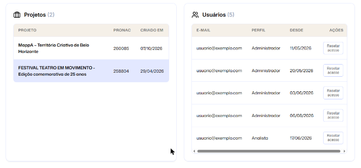
Como ler um status
Em todas as tabelas do painel o status aparece em três camadas:
- O rótulo em português, igual ao que o cliente vê no Prestaí (por exemplo, Revisão Manual).
- A etiqueta colorida do grupo, que diz em que situação ele está.
- O código técnico, pequeno embaixo (por exemplo,
revisao_manual). Use-o quando falar com o desenvolvimento.
Passando o mouse sobre o status aparece a explicação e o próximo passo, os mesmos que estão no catálogo de status.
| Grupo | Quer dizer | O que o suporte faz |
|---|---|---|
| Em andamento | O sistema está trabalhando e ainda está dentro do tempo normal. | Esperar. |
| Travado | Estava em andamento e passou do prazo normal para aquela etapa. | Usar a ação indicada (reprocessar, revalidar etc.). |
| Erro | A etapa falhou. | Ler a causa e usar a ação indicada, ou avisar o cliente. |
| Esperando cliente | Depende de uma decisão ou de um envio do cliente. Nunca vira travado. | Avisar o cliente. Se passou de 7 dias, ele aparece na aba Atenção. |
| Finalizado | Terminou. | Nada. |
Quando algo é considerado travado
| Etapa | Vira travado após |
|---|---|
| Documento em processamento (OCR) | 5 min |
| Documento em Auditoria IA (conformidade); o normal é menos de 1 min | 5 min |
| Documento em carência D-3 (72 h + 1 dia de folga) | 4 dias |
| Extrato pendente | 30 min |
| Importação de projeto SALIC pendente ou processando | 30 min |
| Captura de saldo SALIC executando | 30 min |
| Exportação gerando | 60 min |
Para documentos, o tempo é contado a partir da última atualização do documento. Qualquer alteração (inclusive automática) reinicia esse relógio, então um documento pode estar parado há mais tempo do que o painel mostra. Extratos antigos não guardam data de envio: aparecem como tempo desconhecido, e os pendentes nessa situação são tratados como travados.
As abas do projeto
Ao abrir um projeto aparecem oito abas: Atenção, Documentos, Extratos, Evidências, Saldo SALIC, Contratos, Guias e Auditoria. O projeto abre sempre na aba Atenção.
Atenção
É a lista do que precisa de você naquele projeto. Ela junta documentos, extratos, exportações, capturas de saldo, evidências e importação de projeto SALIC. A ordem é: primeiro os erros, depois os travados, depois os que esperam o cliente há mais de 7 dias; dentro de cada grupo, os mais antigos primeiro.
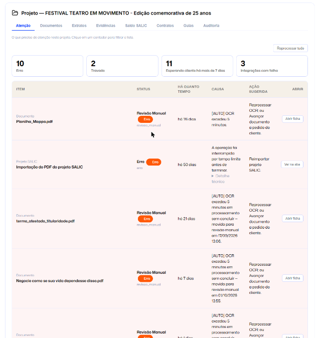
Os quatro contadores
- Erro: itens cuja etapa falhou.
- Travado: itens em andamento que passaram do prazo.
- Esperando cliente há mais de 7 dias: dependem do cliente e estão parados há uma semana ou mais.
- Integrações com falha: tudo o que não é documento (extratos, exportações, saldo, evidências, importação de projeto) em erro ou travado.
Clique num contador para filtrar a lista; clique de novo para tirar o filtro.
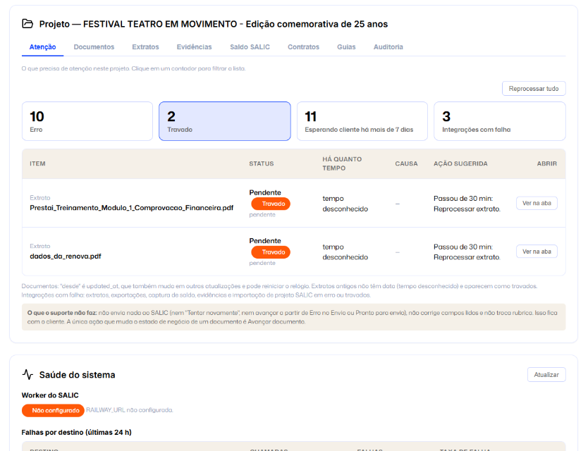
As colunas
- Item: tipo (documento, extrato, projeto SALIC…) e nome.
- Causa: a mensagem de erro gravada. Nas integrações com o SALIC a causa vem traduzida; o texto original fica em Detalhe técnico, que abre ao clicar.
- Ação sugerida: o próximo passo do catálogo.
- Abrir: em documento abre a ficha; em exportação travada mostra Encerrar exportação; nos demais, Ver na aba leva à aba certa do projeto.
O botão Reprocessar tudo, no canto superior direito, está explicado em Reprocessar tudo.
Documentos
Todos os documentos do projeto, dos mais novos para os mais antigos, 15 por página. Os botões acima da tabela mostram quantos documentos há em cada status e servem de filtro. Linhas em destaque estão bloqueadas por conformidade ou têm erro registrado; o erro aparece em laranja embaixo do status.
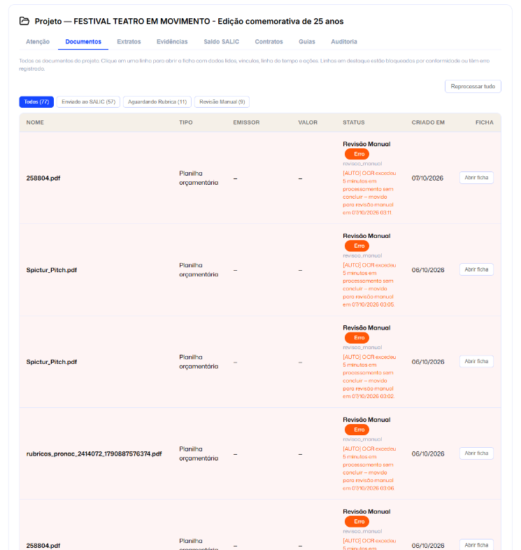
Extratos
Os extratos bancários enviados no projeto, com período, status, desde quando, quantos lançamentos foram lidos e quantos já foram conciliados com notas. A coluna Ação tem o Reprocessar extrato, habilitado quando o extrato está pendente há mais de 30 min, pendente sem data ou com erro.
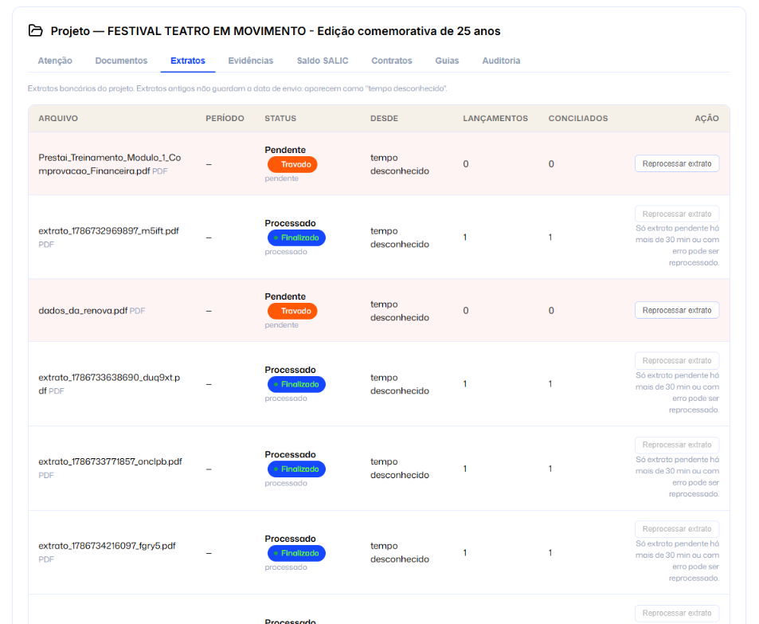
O extrato é reenviado ao fluxo de conciliação em lote, que lê o arquivo e tenta casar os lançamentos com todas as notas pendentes do projeto. Se um extrato com erro já tinha lançamentos lidos, confira depois na coluna Lançamentos se não houve duplicação, e avise o desenvolvimento se houver.
Evidências
Somente leitura: tipo, arquivo, status, motivo da reprovação, categoria e nota da IA e data de envio ao SALIC. O suporte não valida, não reprova e não reenvia evidências.
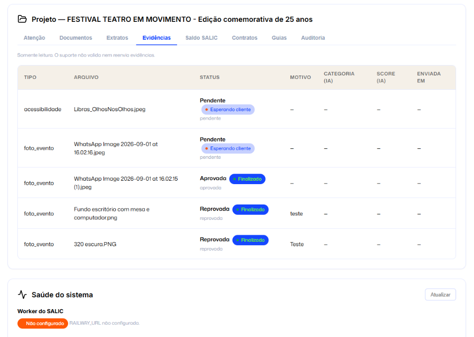
Saldo SALIC
Três blocos:
- Divergências abertas: quantas rubricas têm valor executado diferente entre o Prestaí e o SALIC.
- Últimas capturas: as 10 capturas mais recentes do relatório de execução do SALIC, com a causa do erro em português e o detalhe técnico.
- Importação do projeto SALIC (PDF): a última importação do PDF do projeto, com status, causa e o botão Reimportar projeto SALIC.
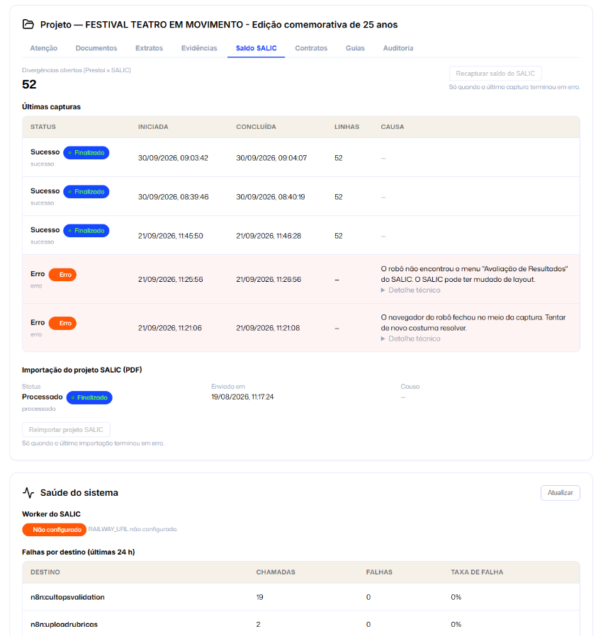
A captura entra no SALIC com a credencial de quem clica, e a conta do suporte não tem credencial SALIC. Quando a última captura deu erro, oriente o cliente a clicar em Atualizar do SALIC na tela de saldo dele.
Contratos, Guias e Auditoria
Contratos e Guias são listas de consulta (número, objeto, valor, período e status; tipo de imposto, competência, valor, vencimento, pagamento e status). Auditoria mostra as últimas 500 alterações do projeto, com data, usuário, tipo, documento, ação e detalhe, igual ao PDF de auditoria do Módulo II.
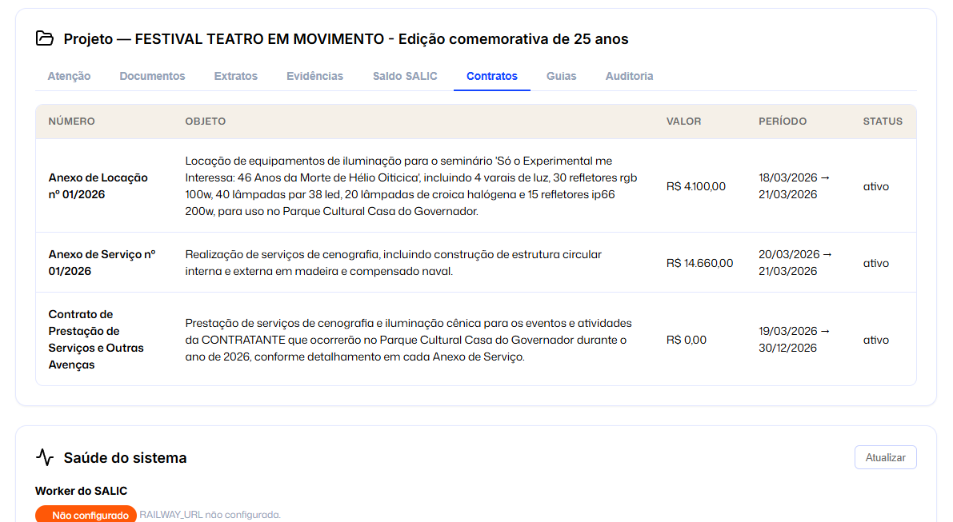
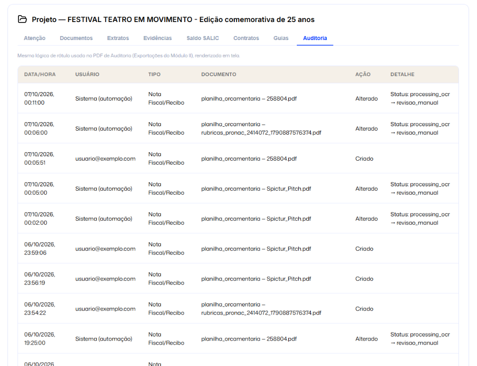
A ficha do documento
A ficha é onde você entende e resolve um documento. Ela abre ao clicar num documento na aba Atenção, na aba Documentos, na busca ou num vínculo de outra ficha.
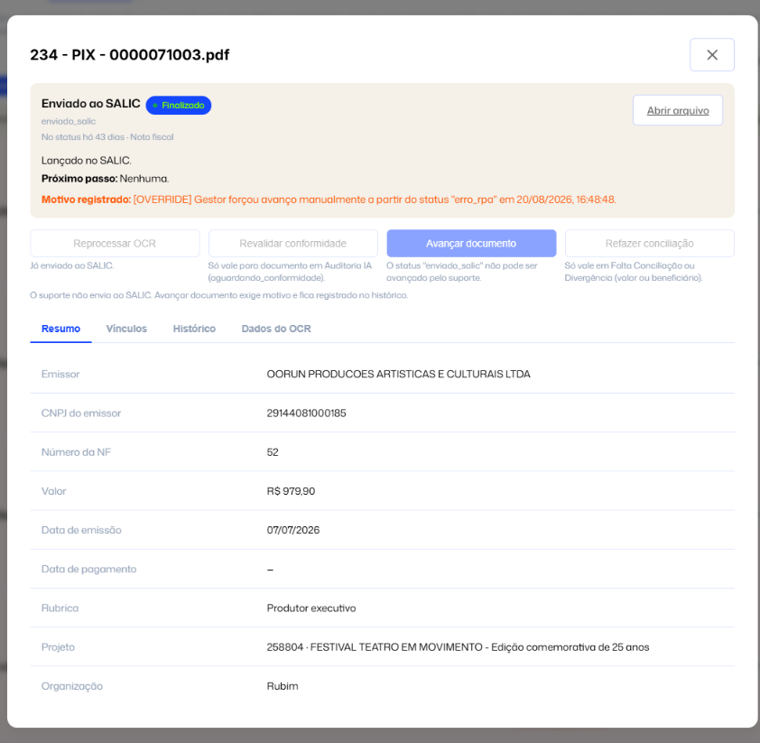
As três partes da ficha
- Situação (topo, fundo bege): status com grupo, há quanto tempo está nele, tipo do documento, o que o status significa, o próximo passo e o motivo registrado (o erro gravado no documento), quando houver. O botão Abrir arquivo abre o PDF ou imagem original numa nova aba; o link vale por 10 minutos, então se expirar feche e reabra a ficha.
- Ações: os botões das ações que fazem sentido para o tipo do documento. Embaixo de cada botão há uma linha: o que a ação faz, quando habilitada, ou por que está bloqueada.
- Abas: Resumo, Vínculos, Histórico e Dados do OCR.
Aba Resumo
Os dados principais: emissor, CNPJ, número da NF, valor, datas de emissão e pagamento, rubrica, projeto e organização.
Aba Vínculos
Tudo o que está ligado ao documento: a despesa gerada (com status, se está conciliada e se foi liberada para o robô), a NF mãe (se for um comprovante), os comprovantes filhos, o extrato de origem (para notas que vieram de upload em lote com extrato), o lançamento bancário conciliado e o fornecedor. NF mãe e comprovantes são links que abrem a ficha deles.
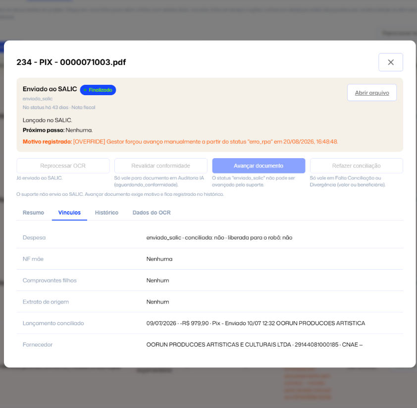
Aba Histórico
Alterações: cada mudança no documento e na despesa, da mais recente para a mais antiga, com quem fez (ou "Sistema (automação)"), de onde veio, o que mudou (de → para) e o motivo. Ações do suporte aparecem com origem suporte_ui. Chamadas externas: cada chamada feita pelo painel ao n8n ou a serviços internos para este documento, com resultado (OK ou Falhou, código HTTP), duração e detalhe.
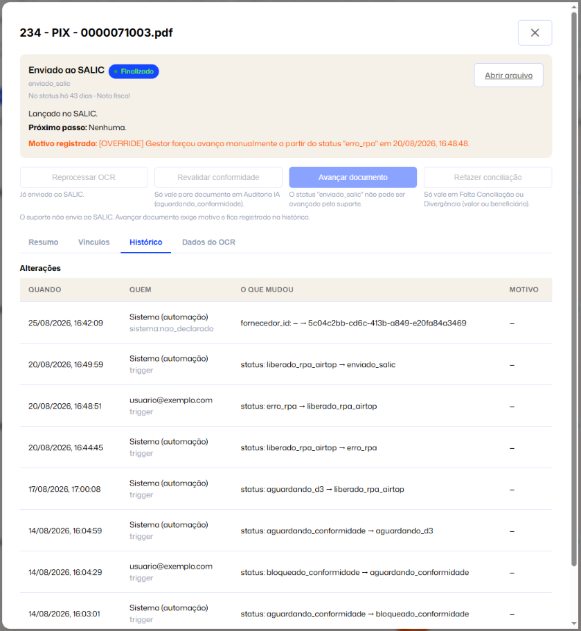
Aba Dados do OCR
Confiança do OCR, valor pago, autenticação bancária, duplicidade, quantas vezes o OCR foi tentado e o JSON completo extraído (clique em "JSON extraído pelo OCR" para abrir). Útil para ver o que a IA leu quando o cliente diz que "o valor saiu errado".
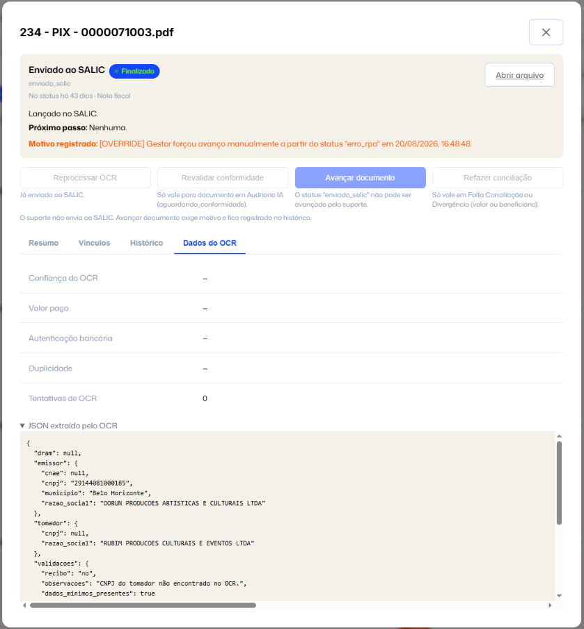
A ficha muda conforme o documento
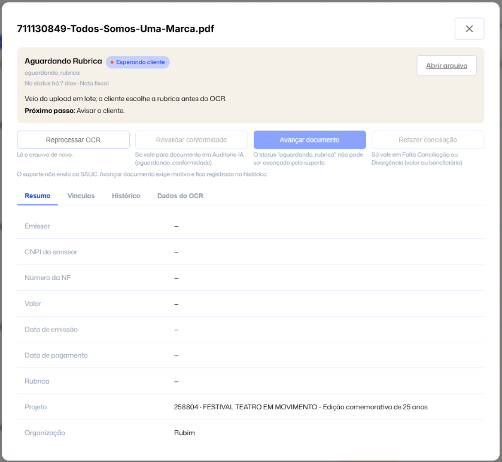
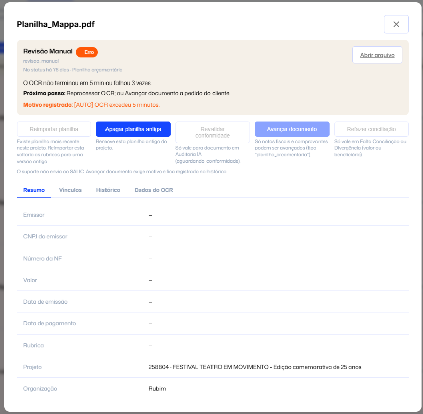
Em nota fiscal e comprovante aparece Reprocessar OCR; em planilha orçamentária aparecem Reimportar planilha e Apagar planilha antiga no lugar dele.
A janela de confirmação
Toda ação abre a mesma janela antes de executar. Ela tem o nome da ação, uma frase com o efeito (leia antes de confirmar), o campo de motivo e o botão de confirmar.
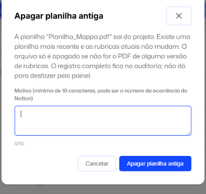
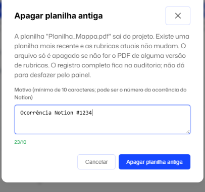
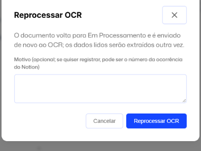
Nas ações com motivo obrigatório, o botão de confirmar tem a mesma cor com ou sem motivo. O que diz se dá para confirmar é o contador abaixo do campo: com menos de 10 caracteres ele fica cinza (por exemplo, 0/10) e o clique não faz nada.
Se a ação falhar com a janela aberta, o erro aparece em laranja na própria janela e você pode tentar de novo. Se você já tiver fechado a janela, o erro aparece num aviso no canto da tela (veja Ações em segundo plano).
Todas as ações
Cada ação abaixo diz quando usar, quando ela fica bloqueada, o que acontece ao confirmar e o passo a passo. O servidor confere as regras de novo na hora de executar: se algo mudou desde que você abriu a ficha, a ação é recusada com a explicação.
Reprocessar OCR motivo opcional
- Para
- Nota fiscal, comprovante ou documento sem tipo.
- Quando usar
- Documento em Revisão Manual (o OCR não terminou ou falhou 3 vezes) ou travado em Em Processamento há mais de 5 min.
- Fica bloqueada
- Se o documento está em processamento há menos de 5 min; se já está em Pronto para envio, Enviado ao SALIC ou Concluído; se já gerou despesa (um OCR novo não atualizaria a despesa e os dois ficariam diferentes).
- O que acontece
- O documento volta para Em Processamento, o contador de tentativas zera e o arquivo é enviado de novo ao OCR com o mesmo pacote de dados que o app envia (inclusive o vínculo com a NF mãe, se for comprovante). Se o n8n recusar, o documento volta ao status anterior.
- Abra a ficha do documento.
- Clique em Reprocessar OCR.
- Se quiser, escreva o número da ocorrência no motivo e confirme.
- Acompanhe: em alguns minutos o documento deve sair de Em Processamento. Reabra a ficha para ver o novo status.
O botão aparece habilitado nesse status, mas a nota de upload em lote só deve passar pelo OCR depois que o cliente escolher a rubrica. Avise o cliente em vez de reprocessar.
Reimportar planilha motivo opcional
- Para
- Planilha orçamentária.
- Quando usar
- A importação da planilha falhou (status Erro) ou ficou parada.
- Fica bloqueada
- Se existe uma planilha mais recente no mesmo projeto (reimportar a antiga voltaria as rubricas para uma versão antiga) ou se a planilha não tem projeto.
- O que acontece
- As rubricas do projeto são importadas de novo a partir desta planilha: cria uma nova versão de rubricas, e rubricas que não constarem nela são marcadas como removidas. Pode levar alguns minutos. Ao final o documento fica Concluído ou Erro com o motivo.
- Confirme com o cliente que esta é a planilha certa (a mais recente).
- Na ficha da planilha, clique em Reimportar planilha e confirme.
- Espere a mensagem de resultado (quantas rubricas foram importadas, ou o erro).
Apagar planilha antiga motivo obrigatório
- Para
- Planilha orçamentária que não é a mais recente do projeto.
- Quando usar
- Quando o Reimportar planilha está bloqueado com "Existe planilha mais recente neste projeto" e a planilha antiga está só poluindo a lista (por exemplo, parada em Revisão Manual).
- Fica bloqueada
- Se é a planilha mais recente do projeto; se tem despesa, guia ou parcela de contrato vinculada; se está sendo importada agora.
- O que acontece
- O documento sai do projeto. As rubricas atuais não mudam. O arquivo só é apagado do armazenamento se não for o PDF de alguma versão de rubricas; se for, ele é mantido para não quebrar o histórico de versões. O documento inteiro fica gravado na auditoria. Não dá para desfazer pelo painel.
- Abra a ficha da planilha antiga.
- Clique em Apagar planilha antiga, escreva o motivo (pelo menos 10 caracteres) e confirme.
- A ficha fecha e o aviso diz se o arquivo foi apagado ou mantido.
Para apagar várias de uma vez, use o botão que aparece dentro do Reprocessar tudo.
Revalidar conformidade motivo opcional
- Quando usar
- Documento em Em Auditoria IA há mais de 5 min (o normal é menos de 1 min).
- Fica bloqueada
- Em qualquer outro status, ou se está em auditoria há 5 min ou menos.
- O que acontece
- A conferência do CNAE do fornecedor contra a rubrica é disparada de novo no n8n, com o mesmo pacote que o app usa. O status do documento não muda; quem tira o documento da auditoria é o próprio fluxo, quando termina.
- Na ficha, clique em Revalidar conformidade e confirme.
- Espere um minuto e reabra a ficha: o documento deve ter ido para outra etapa (por exemplo, Falta Conciliação ou Bloqueado).
Avançar documento motivo obrigatório
É a única ação que muda o andamento de negócio de um documento. Use apenas a pedido do cliente, que assume a responsabilidade pela conformidade do documento. O documento fica marcado com [OVERRIDE SUPORTE] e a data.
| Está em | Vai para | O que mais acontece |
|---|---|---|
| Revisão Manual | Em Auditoria IA | A validação de conformidade é disparada. Se o n8n recusar, o documento avança mesmo assim e o aviso pede para usar Revalidar conformidade depois de 5 min. |
| Bloqueado (conformidade) | Falta Conciliação | Se a nota veio de upload em lote com extrato, o painel tenta conciliar automaticamente com aquele extrato; casando, ela vai direto para Em carência (D-3). |
| Divergência de Valor | Em carência (D-3) | Pula a conferência com o extrato. O documento segue mesmo com o valor diferente do lançamento. |
| Divergência de Beneficiário | Em carência (D-3) | Pula a conferência com o extrato. O documento segue sem lançamento correspondente ao fornecedor. |
- Fica bloqueada
- Em qualquer outro status (inclusive Pronto para envio e Erro no Envio: o suporte não dispara envio ao SALIC) e para tipos que não sejam nota fiscal ou comprovante.
- Confirme com o cliente, por escrito, que ele quer seguir mesmo assim.
- Na ficha, clique em Avançar documento.
- Leia o efeito na janela (ele diz de onde para onde o documento vai).
- Escreva o motivo com o número da ocorrência e confirme.
Refazer conciliação motivo obrigatório
- Quando usar
- Documento em Falta Conciliação, Divergência de Valor ou Divergência de Beneficiário, quando o projeto já tem extrato processado (por exemplo, o cliente subiu o extrato certo depois).
- Fica bloqueada
- Em outros status, ou se o projeto não tem nenhum extrato processado.
- O que acontece
-
Nota que veio de upload em lote com extrato: o painel tenta casar a nota com um lançamento daquele extrato (primeiro pela autenticação bancária, depois por valor e data com até 3 dias de diferença). Se houver mais de um lançamento possível, não casa e avisa.
Demais notas: a conciliação é reenviada ao n8n com o extrato processado mais recente do projeto (a ficha mostra qual será usado). Em divergência, o documento volta antes para Falta Conciliação, como faz o "Substituir Extrato" do app.
- Na ficha, veja embaixo do botão qual extrato será usado.
- Clique em Refazer conciliação, escreva o motivo e confirme.
- Leia o aviso: ele diz se conciliou ou por que não casou.
Reprocessar extrato motivo opcional
- Onde
- Aba Extratos do projeto.
- Quando usar
- Extrato pendente há mais de 30 min, pendente sem data ou com erro.
- O que acontece
- O arquivo é reenviado ao fluxo de conciliação em lote e o extrato volta para Pendente, reiniciando o relógio de 30 min.
Encerrar exportação motivo obrigatório
- Onde
- Aba Atenção, na linha da exportação travada.
- Quando usar
- Exportação em "gerando" há mais de 60 min.
- O que acontece
- A exportação é marcada como erro, o que libera o cliente para gerar de novo.
Reimportar projeto SALIC motivo obrigatório
- Onde
- Aba Saldo SALIC, bloco "Importação do projeto SALIC (PDF)".
- Quando usar
- A última importação do PDF do projeto terminou em erro.
- O que acontece
- O mesmo PDF é lido de novo e os dados do projeto (etapas, locais, deslocamentos, divulgação, dados complementares) são regravados. A importação anterior fica marcada como substituída. Pode levar até 2 minutos.
Recapturar saldo do SALIC sempre bloqueada
Aparece na aba Saldo SALIC só para mostrar o motivo: a captura usa a credencial SALIC de quem clica, e o suporte não tem uma. Oriente o cliente a clicar em Atualizar do SALIC.
Resetar acesso motivo obrigatório
- Onde
- Lista de usuários da organização.
- O que acontece
- A senha do usuário é trocada por uma provisória que você define (mínimo de 6 caracteres) e ele é obrigado a criar outra no próximo login.
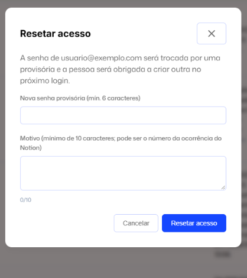
- Abra a organização e clique em Resetar acesso na linha do usuário.
- Digite a senha provisória e o motivo, e confirme.
- A janela seguinte mostra o e-mail e a senha. Use Copiar e repasse ao usuário por um canal seguro.
- Clique em Concluir. A senha some da tela e não fica salva em lugar nenhum.
Reprocessar tudo
Monta uma fila com os documentos do projeto que estão parados ou com erro e manda cada um pelo caminho certo, um de cada vez.
Quem entra na fila e por qual caminho
| Documento | Caminho |
|---|---|
| Nota ou comprovante em Revisão Manual, ou travado em Em Processamento | Reprocessar OCR |
| Planilha mais recente do projeto em Revisão Manual, Erro ou travada | Reimportar planilha |
| Documento em Auditoria IA há mais de 5 min | Revalidar conformidade |
Nunca entram: documentos esperando o cliente (como Aguardando Rubrica), bloqueados, em divergência, prontos para envio, com erro no envio ou já enviados, e nada que dependa de Avançar documento. Documentos parados que não podem ser reprocessados (por exemplo, porque já geraram despesa) aparecem numa lista à parte com o motivo.
Passo a passo
- No projeto, clique em Reprocessar tudo (abas Atenção ou Documentos).
- Confira a fila: quantos documentos, por qual caminho cada um vai, e a lista dos que ficam de fora.
- Se quiser, escreva o motivo (opcional; vale para todos).
- Clique em Iniciar fila.
- Acompanhe pela barra de progresso. Pode fechar a janela e continuar usando o painel.
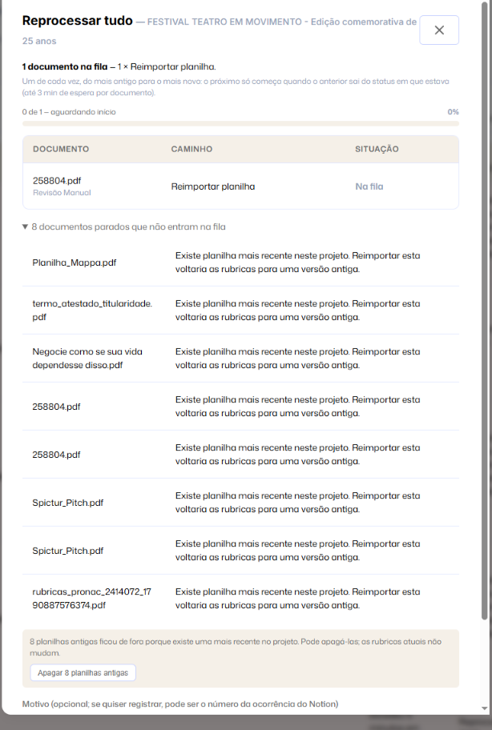
Durante a execução
Depois de enviar cada documento, o painel espera ele sair do status em que estava (até 3 min) antes de passar ao próximo. Cada linha mostra o resultado:
- Concluído: saiu do status. O texto diz para onde foi.
- Pulado: a regra individual não permite mais (o status mudou, gerou despesa etc.).
- Falhou: o envio deu erro, ou o documento voltou para Revisão Manual ou Erro.
- Cancelado: você clicou em Parar antes de chegar a vez dele.
A barra avança a cada documento que termina e mostra qual está sendo processado. Ao final fica verde se não houve falhas e laranja se houve. O botão Parar interrompe depois do documento atual.
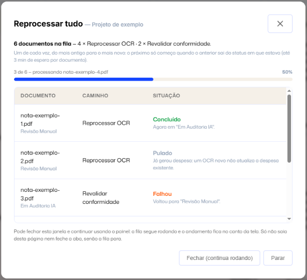
Apagar as planilhas antigas que ficaram de fora
Quando há planilhas antigas fora da fila por existir uma mais recente, aparece o botão Apagar N planilhas antigas. Ele pede motivo, apaga uma por vez (cada uma conferida pelo servidor) e depois remonta a fila. As regras são as mesmas de Apagar planilha antiga.
Ações em segundo plano
Nenhuma janela de ação trava a tela. Você pode fechar a janela a qualquer momento e continuar usando o painel.
- Ações individuais: enquanto executa, a janela avisa que pode ser fechada. Fechando, a ação continua e o resultado (ou o erro) aparece num aviso no canto da tela.
- Reprocessar tudo: o botão vira "Fechar (continua rodando)". Com a janela fechada, um indicador no canto inferior direito mostra o projeto e a barra de progresso; clique nele para reabrir a fila. Ao terminar, o indicador mostra 100% e um "×" para dispensar.
- Só existe uma fila por vez. Clicar em Reprocessar tudo enquanto uma fila roda, mesmo em outro projeto, reabre a que está rodando.
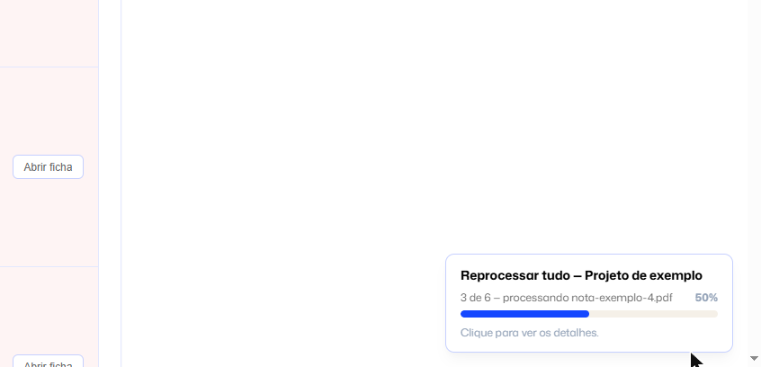
A fila e as ações em andamento são comandadas pela própria página do suporte. Se você for para outra página do Prestaí, recarregar a página ou fechar a aba, a fila para. O documento que já tinha sido enviado continua no n8n, mas os seguintes não são enviados. O navegador pergunta "Sair do site?" quando há algo em andamento: responda Cancelar.
Saúde do sistema
No fim da tela inicial. Use o botão Atualizar para recarregar.
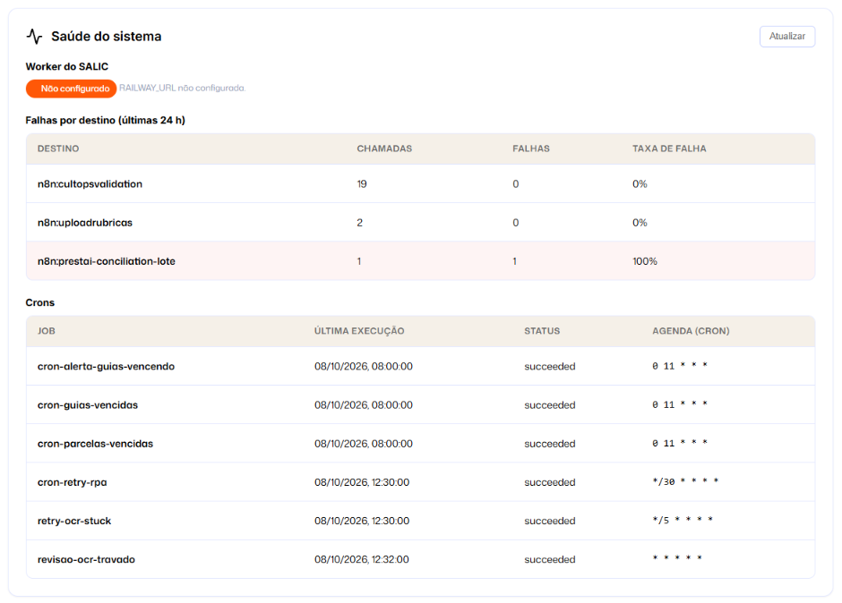
Worker do SALIC
O robô que fala com o SALIC. Respondendo mostra o código HTTP e o tempo de resposta. Sem resposta significa que ele não respondeu em 5 segundos: as capturas de saldo e os envios ao SALIC vão falhar até ele voltar; avise o desenvolvimento. Não configurado aparece quando o servidor não tem o endereço do worker (normal em ambiente local).
Falhas por destino (últimas 24 h)
Quantas chamadas o painel fez a cada destino (por exemplo, n8n:cultops-ocr, n8n:cultopsvalidation, n8n:prestai-conciliation-lote) e quantas falharam. Linhas com mais de 20% de falha ficam em destaque. Se um destino está falhando sempre, não adianta repetir a ação: avise o desenvolvimento.
Crons
As rotinas automáticas, com a última execução, o status e a agenda. A linha fica em destaque com a etiqueta Atrasado quando passou do intervalo esperado:
| Cron | O que faz | Atrasado se não roda há |
|---|---|---|
revisao-ocr-travado | Move para Revisão Manual o documento que passou de 5 min no OCR. | 2 min |
retry-ocr-stuck | Reenvia ao OCR documentos travados (até 3 tentativas). | 5 min |
cron-guias-vencidas | Marca guias de imposto vencidas. | 24 h 30 min |
cron-parcelas-vencidas | Marca parcelas de contrato vencidas. | 24 h 30 min |
cron-alerta-guias-vencendo | Envia o alerta de guias que vencem em 7 dias. | 24 h 30 min |
Casos do dia a dia
"Subi a nota e ela não sai de Em Processamento"
- Busque pelo nome do arquivo e abra a ficha.
- Se está em Em Processamento há menos de 5 min, peça para o cliente aguardar.
- Se já foi para Revisão Manual (ou está travado), clique em Reprocessar OCR.
- Se voltar para Revisão Manual de novo, veja em Histórico → Chamadas externas se o n8n respondeu. Se o arquivo está ilegível, peça ao cliente um arquivo melhor; se o cliente quiser seguir com os dados preenchidos à mão, use Avançar documento a pedido dele.
"A nota está em Auditoria IA há horas"
- Abra a ficha e clique em Revalidar conformidade.
- Espere um minuto e reabra a ficha. Se continuar parada, veja em Chamadas externas se a chamada a
n8n:cultopsvalidationfoi OK e avise o desenvolvimento.
"Minha nota foi bloqueada"
- Na ficha, leia o motivo registrado: rubrica ausente, fora do projeto ou CNAE do fornecedor incompatível com a rubrica.
- O caminho normal é o cliente trocar a rubrica no Prestaí.
- Se o cliente pedir para seguir assim mesmo, use Avançar documento com o motivo. Se a nota veio de lote com extrato, o painel já tenta conciliar.
"Deu divergência de valor (ou de beneficiário)"
- Veja na aba Vínculos se existe lançamento conciliado e confira o valor.
- Se o cliente subiu um extrato novo e correto, use Refazer conciliação.
- Se o cliente confirma que está certo assim, use Avançar documento (lembrando que isso pula a conferência com o extrato).
"A planilha orçamentária não importou"
- Abra a ficha da planilha mais recente do projeto e clique em Reimportar planilha.
- Se o projeto tem planilhas antigas paradas, apague-as com Apagar planilha antiga (ou pelo Reprocessar tudo).
"Subi o extrato e nada aconteceu"
- Na aba Extratos, veja se ele está Pendente há mais de 30 min.
- Clique em Reprocessar extrato.
- Depois de alguns minutos, confira se as colunas Lançamentos e Conciliados mudaram. Se o destino
n8n:prestai-conciliation-loteestiver falhando na Saúde do sistema, avise o desenvolvimento.
"O saldo do SALIC não atualiza"
- Na aba Saldo SALIC, leia a causa da última captura.
- Se for algo do SALIC (fora do ar, mudou de layout) ou do robô, confira o Worker na Saúde do sistema.
- Peça ao cliente para clicar em Atualizar do SALIC quando o problema estiver resolvido. Se a causa for credencial, o cliente precisa atualizar a credencial SALIC dele.
"Está Pronto para envio (ou deu Erro no Envio) e não vai ao SALIC"
O suporte não envia. Explique ao cliente que o envio é feito por ele, com a credencial gov.br, pelo botão Enviar (ou Tentar novamente, no caso de erro). Se o erro se repetir, leia a mensagem na ficha e na Saúde do sistema e avise o desenvolvimento.
"Não consigo entrar"
- Busque pelo e-mail da pessoa e abra a organização.
- Use Resetar acesso e repasse a senha provisória.
Mensagens de bloqueio
O que cada mensagem embaixo de um botão desabilitado quer dizer.
| Mensagem | O que fazer |
|---|---|
| Em processamento agora. Aguarde alguns minutos. | O OCR ainda pode estar rodando. Espere passar de 5 min. |
| Já liberado para o robô enviar ao SALIC. / Já enviado ao SALIC. | Nada a reprocessar. O envio é do cliente. |
| Já gerou despesa: um OCR novo não atualiza a despesa existente… | Não reprocesse. Se os dados estão errados, o cliente corrige no Prestaí. |
| Existe planilha mais recente neste projeto… | Reimporte a mais recente; se quiser, apague esta com Apagar planilha antiga. |
| É a planilha mais recente do projeto; não pode ser apagada. | Use Reimportar planilha se ela deu erro. |
| A planilha tem despesa, guia ou parcela de contrato vinculada. | Não apague. Avise o desenvolvimento. |
| Só vale para documento em Auditoria IA… | Revalidar só serve para o status Em Auditoria IA. |
| Em auditoria há N min… Aguarde passar de 5 min. | Espere. O normal é menos de 1 min. |
| O status "…" não pode ser avançado pelo suporte. | Avançar só vale para Revisão Manual, Bloqueado e Divergências. |
| O suporte não dispara envio ao SALIC. | Avise o cliente. |
| Só notas fiscais e comprovantes podem ser avançados… | Planilhas e guias não são avançadas. |
| Só vale em Falta Conciliação ou Divergência… | Refazer conciliação não se aplica a este status. |
| O projeto não tem extrato processado… | O cliente precisa subir o extrato. |
| Só extrato pendente há mais de 30 min ou com erro… | O extrato está normal ou ainda no prazo. |
| Só quando a última importação/captura terminou em erro. | Nada a fazer. |
| A captura usa a credencial SALIC de quem aciona… | O cliente clica em Atualizar do SALIC. |
| O status do documento mudou enquanto você confirmava. Recarregue a ficha. | Feche e reabra a ficha; alguém (ou um cron) mexeu no documento. |
| Informe o motivo da ação (mínimo de 10 caracteres…) | Escreva um motivo mais longo, por exemplo o número da ocorrência. |
Catálogo de status
Todos os status que o painel conhece, por tipo de registro. É a mesma tabela que o painel usa para mostrar rótulos, grupos e explicações.
Documentos
| Rótulo na tela | Código | Grupo | Vira travado após | O que significa | O que fazer |
|---|---|---|---|---|---|
| Em Processamento | processing_ocr | Em andamento | 5 min | O n8n está lendo o arquivo. | Aguardar; passando de 5 min o cron move para Revisão Manual. |
| Revisão Manual | revisao_manual | Erro | — | O OCR não terminou em 5 min ou falhou 3 vezes. | Reprocessar OCR; ou Avançar documento a pedido do cliente. |
| Em Auditoria IA | aguardando_conformidade | Em andamento | 5 min | O n8n confere o CNAE do fornecedor contra a rubrica; leva menos de 1 min. | Passou de 5 min: Revalidar conformidade. |
| Bloqueado | bloqueado_conformidade | Esperando cliente | — | Rubrica ausente, fora do projeto ou CNAE incompatível (o motivo está em just_erro). | O cliente troca a rubrica; ou Avançar documento a pedido dele. |
| Falta Conciliação | aguardando_conciliacao_bancaria | Esperando cliente | — | Falta o extrato com o lançamento deste pagamento. | Se já existe extrato do lote: Refazer conciliação. |
| Falta Comprovante | aguardando_comprovante | Em andamento | 5 min | Um trigger converte este status na hora em Falta Conciliação; não deveria permanecer. | Se permanecer, tratar como travado e avisar o desenvolvimento. |
| Divergência de Valor | divergencia_valor | Esperando cliente | — | O valor da nota difere do lançamento no extrato. | Refazer conciliação; ou Avançar documento a pedido do cliente. |
| Divergência de Beneficiário | divergencia_beneficiario | Esperando cliente | — | Não foi encontrado lançamento para este fornecedor. | Refazer conciliação; ou Avançar documento a pedido do cliente. |
| Em carência (D-3) | aguardando_d3 | Em andamento | 4 dias | Conciliado; aguarda 72 h da data da transação. | Nenhuma. |
| Pronto para envio | liberado_rpa_airtop | Esperando cliente | — | Pode ir ao SALIC; o gestor precisa clicar em Enviar (usa a credencial gov.br dele). | Avisar o cliente. O suporte não envia. |
| Erro no Envio | erro_rpa | Erro | — | O robô falhou ao lançar no SALIC. | Ver a mensagem; o cliente usa Tentar novamente. O suporte não reenvia. |
| Enviado ao SALIC | enviado_salic | Finalizado | — | Lançado no SALIC. | Nenhuma. |
| Aguardando Rubrica | aguardando_rubrica | Esperando cliente | — | Veio do upload em lote; o cliente escolhe a rubrica antes do OCR. | Avisar o cliente. |
| Aguardando aprovação | aguardando_aprovacao_fornecedor | Esperando cliente | — | Nota enviada pelo fornecedor; o gestor aprova ou rejeita. | Avisar o cliente. |
| Rejeitada | rejeitado_fornecedor | Finalizado | — | O gestor rejeitou; nunca sai deste status. | Nenhuma. |
| Concluído | concluido | Finalizado | — | Planilha orçamentária importada. | Nenhuma. |
| Erro | erro | Erro | — | Planilha orçamentária: a importação falhou (o motivo está em just_erro). | Reimportar planilha, só a mais recente do projeto. |
| Enviado | uploaded | Em andamento | 5 min | Status sem gravador conhecido; não deveria existir. | Tratar como travado e avisar o desenvolvimento. |
| Validando | validating | Em andamento | 5 min | Status sem gravador conhecido; não deveria existir. | Tratar como travado e avisar o desenvolvimento. |
| Validado | validated | Em andamento | 5 min | Status sem gravador conhecido; não deveria existir. | Tratar como travado e avisar o desenvolvimento. |
Extratos
| Rótulo na tela | Código | Grupo | Vira travado após | O que significa | O que fazer |
|---|---|---|---|---|---|
| Pendente | pendente | Em andamento | 30 min | O n8n está lendo o extrato e criando os lançamentos. | Passou de 30 min: Reprocessar extrato. |
| Processado | processado | Finalizado | — | Extrato lido e lançamentos criados. | Nenhuma. |
| Erro | erro | Erro | — | A leitura do extrato falhou. | Reprocessar extrato. |
Exportações
| Rótulo na tela | Código | Grupo | Vira travado após | O que significa | O que fazer |
|---|---|---|---|---|---|
| Gerando | gerando | Em andamento | 60 min | O arquivo da exportação está sendo gerado. | Passou de 60 min: Encerrar exportação. |
| Pronto | pronto | Finalizado | — | Exportação concluída. | Nenhuma. |
| Erro | erro | Erro | — | A exportação falhou. | O cliente pode gerar de novo. |
Capturas de saldo SALIC
| Rótulo na tela | Código | Grupo | Vira travado após | O que significa | O que fazer |
|---|---|---|---|---|---|
| Executando | executando | Em andamento | 30 min | O robô está lendo o relatório de execução do SALIC. | Passou de 30 min: verificar a saúde do worker. |
| Sucesso | sucesso | Finalizado | — | Captura concluída. | Nenhuma. |
| Erro | erro | Erro | — | A captura do saldo falhou (o motivo está em erro_mensagem). | O cliente atualiza o saldo de novo (usa a credencial dele). |
Evidências
| Rótulo na tela | Código | Grupo | Vira travado após | O que significa | O que fazer |
|---|---|---|---|---|---|
| Pendente | pendente | Esperando cliente | — | Evidência enviada, aguardando validação do gestor. | Avisar o cliente. |
| Pendente de complemento | pendente_complemento | Esperando cliente | — | O gestor pediu complemento da evidência. | Avisar o cliente. |
| Aprovada | aprovada | Finalizado | — | Evidência aprovada. | Nenhuma. |
| Reprovada | reprovada | Finalizado | — | Evidência reprovada (o motivo está em motivo_reprovacao). | Nenhuma. |
| Enviada ao SALIC | enviada_salic | Finalizado | — | Evidência enviada ao SALIC. | Nenhuma. |
| Erro no Envio | erro_rpa | Erro | — | O robô falhou ao enviar a evidência ao SALIC. | O cliente tenta novamente. O suporte não reenvia. |
Importação do projeto SALIC
| Rótulo na tela | Código | Grupo | Vira travado após | O que significa | O que fazer |
|---|---|---|---|---|---|
| Pendente | pendente | Em andamento | 30 min | A importação do projeto SALIC vai começar. | Passou de 30 min: Reimportar projeto SALIC. |
| Processando | processando | Em andamento | 30 min | O servidor está lendo o PDF do projeto. | Passou de 30 min: Reimportar projeto SALIC. |
| Processado | processado | Finalizado | — | PDF lido e dados do projeto gravados. | Nenhuma. |
| Erro | erro | Erro | — | A importação do PDF falhou (o motivo está em erro_mensagem). | Reimportar projeto SALIC. |
Glossário
- OCR
- Leitura automática do arquivo (nota, comprovante) pela IA para extrair emissor, valor, datas etc.
- Conformidade / Auditoria IA
- Conferência automática do CNAE do fornecedor contra a rubrica escolhida.
- Conciliação
- Casamento da nota com o lançamento correspondente no extrato bancário.
- Carência D-3
- Espera de 72 h a partir da data da transação antes de liberar o envio ao SALIC.
- Despesa
- Lançamento financeiro gerado a partir do documento; é o que vai ao SALIC.
- Rubrica
- Linha do orçamento do projeto em que a despesa é lançada.
- Planilha orçamentária
- PDF do orçamento do projeto, de onde as rubricas são importadas.
- Upload em lote
- Envio de várias notas de uma vez, opcionalmente com o extrato do período (extrato de origem).
- n8n
- Ferramenta que roda os fluxos automáticos (OCR, validação, conciliação, importação de rubricas).
- Worker do SALIC
- Robô que entra no SALIC para capturar saldo e lançar despesas.
- Cron
- Rotina automática que roda em horários fixos.
- audit_log
- Registro de todas as alterações: quem, quando, o que e o motivo.
Manual do Painel de Suporte do Prestaí. Prints tirados em 08/10/2026 no ambiente local apontado para os dados de produção; e-mails ocultados. Os prints da fila em andamento e do indicador no canto são exemplos ilustrativos com nomes fictícios.